|
Card
ในภาคนี้สามารถเล่นการ์ดเกมได้ เมื่อมีการ์ดไม่ต่ำกว่า 5 ใบ
วิธีการได้การ์ด
- การ์ดสามารถหาได้จากการต่อสู้กับศัตรู และได้มาแบบสุ่ม
- เมื่อเล่นการ์ดชนะคู่ต่อสู้ จะได้การ์ดที่เราชนะมา ในกรณีที่ชนะแบบ Perfect
จะได้การ์ดทั้งหมด
- ซื้อจากร้านค้าบางร้าน
- ได้จากหีบสมบัติที่ Chocobo ขุดขึ้นมา
- ได้จากสมบัติอื่นๆ
สามารถเล่นการ์ดกับผู้คนได้โดยการกดปุ่ม "สี่เหลี่ยม" แล้วเขาก็จะถามว่าจะเล่นการ์ดหรือไม่
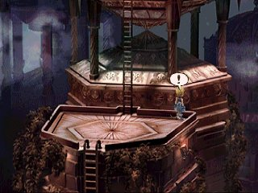
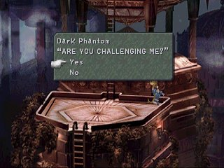
* ในกรณีที่คนนั้นไม่สามารถเล่นการ์ดด้วยได้ จะกลายเป็นการพูดคุยธรรมดา
Card Status
ในการ์ดจะมีส่วนสำคัญอยู่ 2 ส่วน คือ
ลูกศร และ ตัวอักษร 4 ตัว
- ลูกศร
ลูกศรนั้นใช้โจมตีการ์ดของคู่ต่อสู้ จะมีอยู่ทั้งหมด 8 ทิศ
หากลูกศรของเราชี้ไปที่ด้านที่ว่างของคู่ต่อสู้ การ์ดของคู่ต่อสู้ก็จะเปลี่ยนมาเป็นของเรา
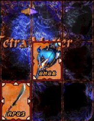 ลงไปจะได้
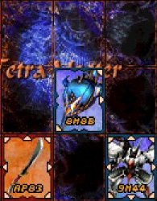
การ์ดสีฟ้า คือของเรา การ์ดสีแดง คือ ของศัตรู
หากลูกศรของเราชี้ไปที่ด้านที่มีลูกศรของคู่ต่อสู้
จะเป็นการสู้กันของการ์ดทั้งสองใบ ซึ่งจะต้องดูที่ตัวอักษรทั้ง 4 ตัว
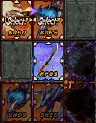 จากรูป เมื่อลงการ์ดไป
จะชนะการ์ดที่อยู่ด้านล่างซ้าย
แต่ต้องสู้กับการ์ดด้านบนซ้าน และบนกลาง ซึ่งจะต้องดูพลังโจมตี และพลังป้องกันของการ์ดแต่ละใบ
การ์ดสามารถชนะแบบ Combo ได้ คือเมื่อชนะการ์ดใบนี้แล้ว จะไปชนะหรือแพ้ การ์ดอีกใบได้ด้วย
- ตัวอักษร 4 ตัว
อักษรตัวแรก แทนพลังโจมตี มีตั้งแต่ 0-9 A B C D E
อักษรตัวที่สอง แทนรูปแบบการโจมตี มี 3 แบบ คือ
P = Physical โจมตีด้านกายภาพ
M = Magical โจมตีด้วยเวทย์มนต์
X = มีพลังป้องกันน้อย
อักษรตัวที่สาม แทนพลังป้องกันด้านกายภาพ
อักษรตัวที่สี่ แทนพลังป้องกันด้านเวทย์มนต์
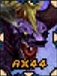 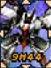
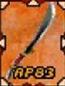
All Card
เมื่อสะสมการ์ดไปถึงระยะหนึ่ง จะเริ่มหาการ์ดได้ยากขึ้น
เพราะการ์ดบางใบ ต้องทำเหตุการณ์พิเศษ จึงจะสามารถได้มา
อีกทั้งการ์ดบางใบ จะได้จากการต่อสู้กับคนบางคนเท่านั้น
ซึ่งหมายความว่า มีเพียงที่เดียวที่จะได้การ์ดนั้นมา
สถานที่ที่สามารถได้การ์ดทั้ง 100 ใบ มีดังนี้
1 Goblin Buy it in Treno outside the Card Stadium
2 Fang Buy it in Treno outside the Card Stadium
3 Skeleton Buy it in Treno outside the Card Stadium
4 Flan Buy it in Treno outside the Card Stadium
5 Zaghnol Win from "Drunk" in Treno/Knight's House
6 Lizard Man Win from "Drunk" in Treno/Knight's House
7 Zombie Win from "Self-Proclaimed Artist Michael" in Lindblum
8 Bomb Win from "Self-Proclaimed Artist Michael" in Lindblum
9 Ironite Win from "Self-Proclaimed Artist Michael" in Lindblum
10 Sahagin Win from "Self-Proclaimed Artist Michael" in Lindblum
11 Yeti Win from "Thug" in Treno/Gate
12 Mimic Win from "Thug" in Treno/Gate
13 Wyerd Win from "Thug" in Treno/Gate
14 Mandragora Win from "Thug" in Treno/Gate
15 Crawler Win from "Weimar" in Alexandria/Steeple
16 Sand Scorpion Win from "Ashley" in Alexandria/Alley
17 Nymph Win from "Weimar" in Alexandria/Steeple
18 Sand Golem Win from "Weimar" in Alexandria/Steeple
19 Zuu Win from "Ashley" in Alexandria/Alley
20 Dragonfly Win from "Girl" in Treno/Walkway (outside Tot's
tower)
21 Carrion Worm Win from "Mario" in Treno/Treno Slums
22 Cerberus Win from "Young Woman" in Lindblum's Business District
23 Antlion Win from "Young Woman" in Lindblum's Business District
24 Cactuar Win from "Young Woman" in Lindblum's Business District
25 Gimme Cat Win from "Young Woman" in Lindblum's Business District
26 Ragtimer Win from "Card Freak" in Lindblum's *Theater* District
27 Hedgehog Pie Win from "Card Freak" in Lindblum's *Theater*
District
28 Ralvuimahgo Win from "Card Freak" in Lindblum's *Theater*
District
29 Ochu Win from "Card Freak" in Lindblum's *Theater* District
30 Troll Win from "Scholar" in Daguerreo/Right Hall
31 Blazer Beetle Win from "Adventurer" in Daguerreo/Left Hall
32 Abomination Win from "Adventurer" in Daguerreo/Left Hall
33 Zemzelett Win from "Adventurer" in Daguerreo/Left Hall
34 Stroper Win from "Adventurer" in Daguerreo/Left Hall
35 Tantarian Win from "Scholar" in Daguerreo/Right Hall
36 Grand Dragon Win from "No. 189" in Black Mage Village/Pond
37 Feather Circle Win from "No. 44" in Black Mage Village/Pond
38 Hecteyes Win from "No. 44" in Black Mage Village/Pond
39 Ogre Win from "No. 44" in Black Mage Village/Pond
40 Armstrong Win from "No. 44" in Black Mage Village/Pond
41 Ash Win from "No. 56" in Black Mage Village/Cemetery
42 Wraith Win from "No. 56" in Black Mage Village/Cemetery
43 Gargoyle Win from "No. 56" in Black Mage Village/Cemetery
44 Vepal Win from "No. 44" in Black Mage Village/Pond
45 Grimlock Win from "Straight Shooter Shak" at Treno Card Stadium
46 Tonberry Win from "Straight Shooter Shak" at Treno Card Stadium
47 Veteran Win from "Straight Shooter Shak" at Treno Card Stadium
48 Garuda Win from "Straight Shooter Shak" at Treno Card Stadium
49 Malboro Win from "Malboro Master Joe" at Treno Card Stadium
50 Mover Win from "Beast Master Gilbert" at Treno Card Stadium
51 Abadon Win from "Beast Master Gilbert" at Treno Card Stadium
52 Behemoth Win from "Beast Master Gilbert" at Treno Card Stadium
53 Iron Man Win from "Beast Master Gilbert" at Treno Card Stadium
54 Nova Dragon Win from "Master Phantom" in Memoria/Stairs of
Time
55 Ozma Win from "Dark Phantom" in Memoria/Stairs
56 Hades Win from "Master Phantom" in Memoria/Stairs of Time
57 Holy Win from "Magic Master Thalisa" at Treno Card Stadium
58 Meteor Win from "Magic Master Thalisa" at Treno Card Stadium
59 Flare Win from "Magic Master Thalisa" at Treno Card Stadium
60 Shiva Win from "Eidolon Master Leyra" at Treno Card Stadium
61 Ifrit Win from "Eidolon Master Leyra" at Treno Card Stadium
62 Ramuh Win from "Eidolon Master Leyra" at Treno Card Stadium
63 Atomos Win from "Eidolon Master Leyra" at Treno Card Stadium
64 Odin Win from "Eidolon Master Leyra" at Treno Card Stadium
65 Leviathan Win from "Eidolon Master Leyra" at Treno Card Stadium
66 Bahamut Win from "Eidolon Master Leyra" at Treno Card Stadium
67 Ark Win from "Eidolon Master Leyra" at Treno Card Stadium
68 Fenrir Win from "Eidolon Master Leyra" at Treno Card Stadium
69 Madeen Win from "Strong Phantom" in Memoria/Lost Memory
70 Alexander Win from "Eidolon Master Leyra" at Treno Card Stadium
71 Excalibur II Win from "Weapon Master Hunt" at Treno - VERY
RARE
72 Ultima Weapon Win from "Weapon Master Hunt" at Treno Card
Stadium
73 Masamune Win from "Weapon Master Hunt" at Treno Card Stadium
74 Elixir Win from "Strong Phantom" in Memoria/Lost Memory
75 Dark Matter Win from "Dark Phantom" in Memoria/Stairs
76 Ribbon Win from "Defense Phantom" in Memoria/Recollection(2)
77 Tiger Racket Win from "No. 56" in Black Mage Village/Cemetery
78 Save the Queen Win from "Weapon Master Hunt" at Treno Card
Stadium
79 Genji Win from "Strong Phantom" in Memoria/Lost Memory
80 Mythril Sword Win from "Weapon Master Hunt" at Treno Card
Stadium
81 Blue Narciss ## Get the "southern tip of Forgotten Continent"
foam
82 Hilda Garde 3 ## Get the "Outer Island 2" Chocograph treasure
83 Invincible Win from "Master Phantom" in Memoria/Stairs of
Time
84 Cargo Ship ## Get the "Uncultivated Land" Chocograph treasure
85 Hilda Garde 1 ## Get the "northeastern Forgotten Continent"
crack
86 Red Rose ## Get the Dead Pepper treasure in Quan's Dwelling
87 Theater Ship ## Get the "Cold Field" Chocograph treasure
88 Viltgance Buy it from Mene for 1800 Chocobo points
89 Chocobo Win from "Fat Chocobo" in Chocobo's Paradise
90 Fat Chocobo ## Talk to Fat Chocobo after all 32 Chocobo treasures
91 Mog Win from "Rare Phantom" in Memoria/Time Warp
92 Frog Win from "Ashley" in Alexandria/Alley
93 Oglop Win from "Oglop Master Bon" at Treno Card Stadium
94 Alexandria Win from "Strong Phantom" in Memoria/Lost Memory
95 Lindblum Win from "Strong Phantom" in Memoria/Lost Memory
96 Two Moons Win from "Strong Phantom" in Memoria/Lost Memory
97 Gargant Acquired from Dracozombies all over the world (disk 4)
98 Namingway **## In Kuja's room of the Desert Palace, look for an !
99 Boco Win from "Rare Phantom" in Memoria/Time Warp
100 Airship Win from "Rare Phantom" in Memoria/Time Warp
การ์ดบางใบมีโอกาสเก็บได้เพียงหนเดียวเท่านั้น หากพลาดไปแล้ว ก็ไม่สามารถย้อนกลับมาเก็บได้อีก
ในตอนท้ายของเกม เมื่อเข้าไปใน Memoria/Time Warp จะมี Phantom ที่สามารถเล่นการ์ดได้
Phantom จะมีอยู่หลายตัว พวกเขาจะมีการ์ดที่หายากครอบครองอยู่
หากชนะได้ ก็จะได้การ์ดพวกนั้นมา
แต่พวกเขาจะไม่มีรูปร่าง เมื่อเดินเข้าไปเจอ จะมีเครื่องหมาย ! โผล่ขึ้นมา
ให้กดปุ่ม "สี่เหลี่ยม" เพื่อขอเล่นการ์ดได้เลย ดังรูป
Let's Play
เริ่มต้นการเล่นการ์ด เมื่อกดปุ่ม "สี่เหลี่ยม" กับคนที่ต้องการเล่นด้วย
และเขาสามารถเล่นการ์ดได้
เลือกการ์ดคนละ 5 ใบ จากนั้นจะเป็นการสุ่มว่าใครจะได้เป็นฝ่ายลงการ์ดก่อน
จะเล่นการ์ดกันบนตารางขนาด 4x4 ในบางครั้งจะมีเครื่องกีดขวางอยู่บนตาราง
จากนั้นจะผลัดกันลงการ์ดทีละใบ จนหมด
ใครที่ได้การ์ดมากกว่า ก็จะเป็นฝ่ายชนะไป โดยจะได้การ์ดของคู่ต่อสู้ที่เปลี่ยนเป็นสีของผู้ชนะ
หากแพ้ ก็จะต้องเสียการ์ดที่เปลี่ยนเป็นสีของคู่ต่อสู้ ให้กับคู่ต่อสู้ไปด้วย
แต่ถ้าการ์ดที่ได้ มีจำนวนเท่ากับของคู่ต่อสู้ (5 ใบเท่ากัน) ก็จะถือว่าเสมอ
(Draw)
และถ้าผู้ชนะ สามารถทำให้การ์ดเปลี่ยนเป็นสีของตนได้หมดทั้ง 10 ใบ (Perfect)
ก็จะได้การ์ดทั้งหมดบนสนาม
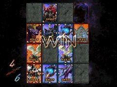 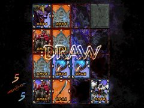
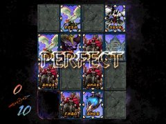
|